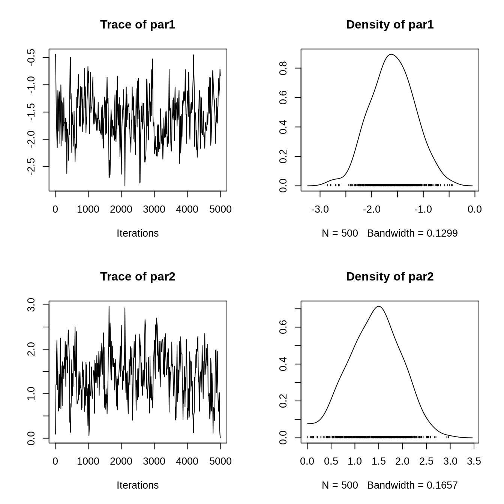

extending-ergmito.RmdThe ergmito’s workhorse are two other functions: (1) ergm’s ergm.allstats which is used to compute the support of model’s sufficient statistics, and (2) ergmito_formulae which is a wrapper of that same function, and that returns a list including the following two functions: loglike and grad, the functions to calculate the joint log-likelihood of the model and its gradient.
library(ergmito)
data(fivenets)
model_object <- ergmito_formulae(fivenets ~ edges + ttriad)
# Printing the model object
model_object
#> ergmito log-likelihood function
#> Number of networks: 5
#> Model: fivenets ~ edges + ttriad
#> Available elements by using the $ operator:
#> loglik: function (params, ...) grad : function (params, ...)
# Printing the log-likelihood function
model_object$loglik
#> function (params, ...)
#> {
#> ans <- sum(exact_loglik(ergmito_ptr, params = params, ...))
#> if (!is.finite(ans))
#> return(-.Machine$double.xmax * 1e-100)
#> else return(ans)
#> }
#> <bytecode: 0x83ed560>
#> <environment: 0x83ef598>Besides of the log-likelihood function and the gradient function, ergmito_formulae also returns We can take a look at each component from our previous object:
# The vectors of weights
str(model_object$stats.weights)
#> List of 5
#> $ : int [1:40] 66 12 168 72 48 196 120 1 88 1 ...
#> $ : int [1:40] 66 12 168 72 48 196 120 1 88 1 ...
#> $ : int [1:40] 66 12 168 72 48 196 120 1 88 1 ...
#> $ : int [1:40] 66 12 168 72 48 196 120 1 88 1 ...
#> $ : int [1:40] 66 12 168 72 48 196 120 1 88 1 ...
# The matrices of the sufficient statistics
str(model_object$stats.statmat)
#> List of 5
#> $ : num [1:40, 1:2] 2 1 4 8 7 3 6 12 6 0 ...
#> ..- attr(*, "dimnames")=List of 2
#> .. ..$ : NULL
#> .. ..$ : chr [1:2] "edges" "ttriple"
#> $ : num [1:40, 1:2] 2 1 4 8 7 3 6 12 6 0 ...
#> ..- attr(*, "dimnames")=List of 2
#> .. ..$ : NULL
#> .. ..$ : chr [1:2] "edges" "ttriple"
#> $ : num [1:40, 1:2] 2 1 4 8 7 3 6 12 6 0 ...
#> ..- attr(*, "dimnames")=List of 2
#> .. ..$ : NULL
#> .. ..$ : chr [1:2] "edges" "ttriple"
#> $ : num [1:40, 1:2] 2 1 4 8 7 3 6 12 6 0 ...
#> ..- attr(*, "dimnames")=List of 2
#> .. ..$ : NULL
#> .. ..$ : chr [1:2] "edges" "ttriple"
#> $ : num [1:40, 1:2] 2 1 4 8 7 3 6 12 6 0 ...
#> ..- attr(*, "dimnames")=List of 2
#> .. ..$ : NULL
#> .. ..$ : chr [1:2] "edges" "ttriple"
# The target statistic
model_object$target.stats
#> edges ttriple
#> [1,] 2 0
#> [2,] 7 4
#> [3,] 4 0
#> [4,] 5 2
#> [5,] 2 0All this is closely related to the output object from the function ergm.allstats. The next section shows how all this works together to estimate the model parameters using Metropolis-Hastings MCMC.
Suppose that we have a prior regarding the distribution of the fivenets model: The edges parameter is normally distributed with mean -1 and variance 2, while the nodematch("female") term has the same distribution but with mean 1. We can implement this model using a Metropolis-Hastings ratio. First, we need to define the log of the posterior distribution:
# Analyzing the model
model_object <- ergmito_formulae(fivenets ~ edges + nodematch("female"))
#> Warning: `set_attrs()` is deprecated as of rlang 0.3.0
#> This warning is displayed once per session.
# Defining the logposterior
logposterior <- function(p) {
model_object$loglik(params = p) +
sum(dnorm(p, mean = c(-1,1), sd = sqrt(2), log = TRUE))
}
For this example, we are using the fmcmc R package. Here is how we put everything together:
# Loading the required R packages
library(fmcmc)
library(coda)
# Is it working?
logposterior(c(-1, 1))
#> [1] -38.24283
# Now, calling the MCMC function from the fmcmc R package
ans <- MCMC(
fun = logposterior,
initial = c(0, 0),
# 5,000 steps sampling one of every ten iterations
nsteps = 5000,
thin = 10,
# We are using a normal transition kernel with .5 scale and updates are done
# one variable at a time in a random order
kernel = kernel_normal(scale = .5, scheme = "random")
)We can now visualize our results. Since the resulting object is of class mcmc.list, which is implemented in the coda R package for MCMC diagnostics, we can use all the methods included in the package:

summary(ans)
#>
#> Iterations = 10:5000
#> Thinning interval = 10
#> Number of chains = 1
#> Sample size per chain = 500
#>
#> 1. Empirical mean and standard deviation for each variable,
#> plus standard error of the mean:
#>
#> Mean SD Naive SE Time-series SE
#> par1 -1.638 0.4591 0.02053 0.04176
#> par2 1.516 0.5401 0.02415 0.05486
#>
#> 2. Quantiles for each variable:
#>
#> 2.5% 25% 50% 75% 97.5%
#> par1 -2.4958 -1.944 -1.650 -1.302 -0.7901
#> par2 0.4707 1.138 1.512 1.891 2.5794Finally, we can compare this result with what we obtain from the ergmito function
summary(ergmito(fivenets ~ edges + nodematch("female")))
#>
#> ERGMito estimates
#>
#> formula: fivenets ~ edges + nodematch("female")
#>
#> Estimate Std. Error z value Pr(>|z|)
#> edges -1.70475 0.54356 -3.1363 0.001711 **
#> nodematch.female 1.58697 0.64305 2.4679 0.013592 *
#> ---
#> Signif. codes: 0 '***' 0.001 '**' 0.01 '*' 0.05 '.' 0.1 ' ' 1
#> AIC: 73.34109 BIC: 77.52978 (Smaller is better.)